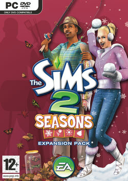
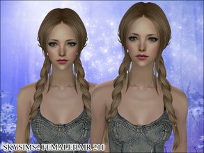
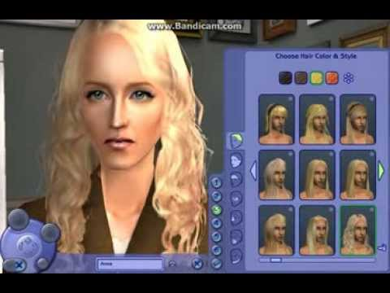
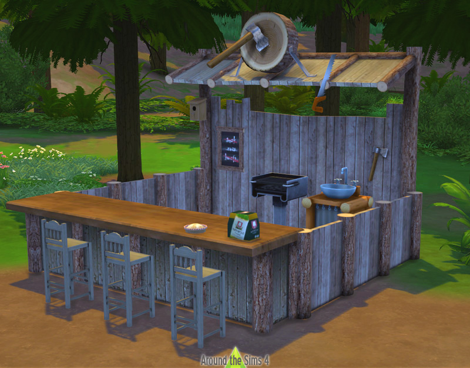

The Sims 2 was released in 2004 and had many major improvements from the first game. One of my favorite features in The Sims 2 is that your sims age up from a baby to an elder and then can pass away from old age. Pregnancy is first introduced in this game as well, in the original game two adult sims who decide to have a baby would just have a baby appear.
There are many expansion packs with this game as well, 8 in total and brought with them many new mechanics. My personal favorite is The Sims 2 Seasons and that brought spring, summer, fall, and winter activities for your sims.
This was the first time I heard about something called The Sims Legacy Challenge.
The Legacy Challenge is a set of rules that you can follow in The Sims 2 that starts with 1 sim that you create and ends in the 10th generation of children that they have. If you have more than one child in a generation, you must choose a child to stay in the family home and they will continue the family tree. I enjoyed playing this because I love large families and loved the child mechanics in-game.
This is also when people started creating mods for the game. Mods are modifications to the game that were not included by the official creators. There are many mechanics and furniture/clothes/hair/makeup in the game, but many people made their own content to enhance their gameplay. Here are some examples:
  Here is a link to a website where you can download custom content:
Mod the SimsRoll to see what aspiration you will get!
Possible options: Pleasure, Family, Romance, Knowledge, Fortune, Popularity